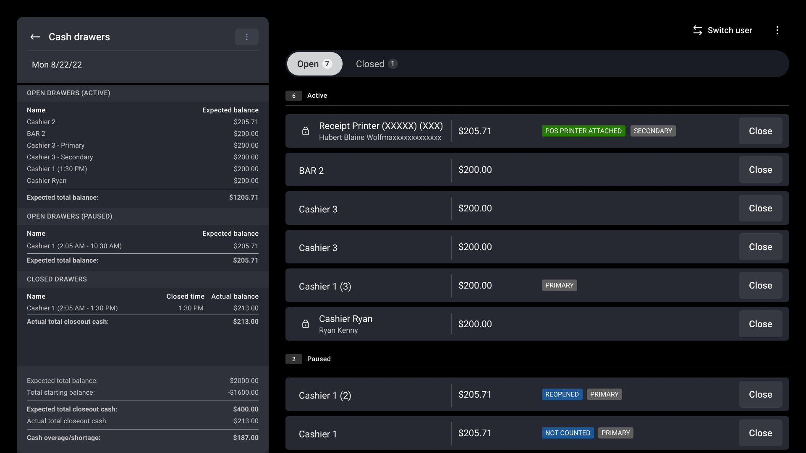
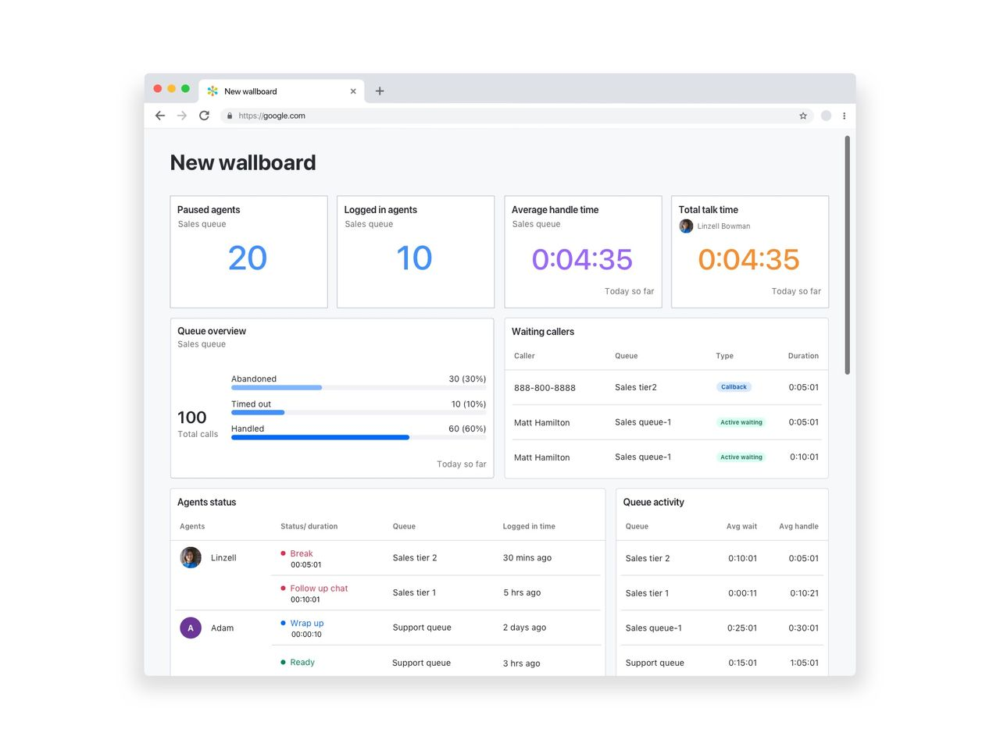
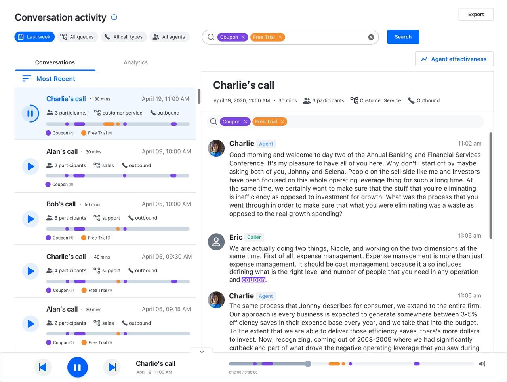
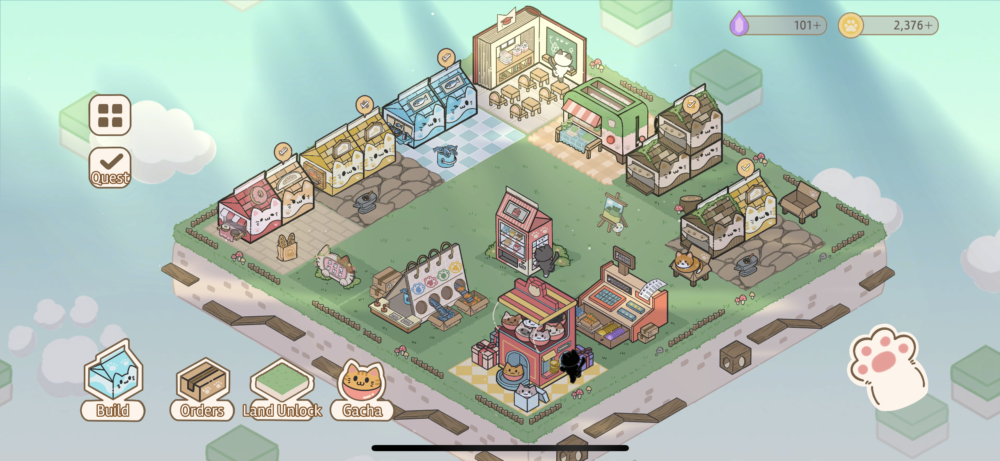

01 / Selected work
Decisions behindthe interface. Complex systems. Real constraints. Five stories about making things clearer.
Selected work 05 cases / Read at your pace
Toast Restaurant operations · 2024
A clearer close
Rethinking tip entry and check closure around the way staff work—and the rules the system has to keep.
Workflow design POS systems Design direction
Read the case study ↗
Browse presentations ↗
Toast POS Check-centered closeout
The decision at the center
Tips belong to individual payments.Closure belongs to the whole check.
↗

02 / Toast Restaurant operations · H2 2023
Cash management, Clearer drawer states, better-prioritized actions, and a shared view of cash activity.
Read the case study ↗

03 / GoTo Contact-center tools · Q1 2021
A shared view. A flexible wallboard that connects choosing metrics, managing boards, and sharing the view.
Read the case study ↗

04 / GoTo AI-assisted review · Concept demo · 2020
Find the moment. Exploring a faster path through call recordings, transcripts, and keyword search.
Read the case study ↗

05 / Cattia Game design · Mobile simulation
A world to build. Gameplay structure, player flows, and a visual system for a world of cats, buildings, and discovery.
Read the case study ↗
A different way to explore Less scrolling. The Toast closeout presentation walks through the alternatives and tradeoffs, one slide at a time.
Go to presentations ↗ Separate from the written case studies.
More work, in brief 06 project snapshots
A wider view of the products I’ve worked on. These are short snapshots from the source portfolio, rather than full case studies.
Toast / Administration Toast Web + Global navigation, product pages, and an alert system for the restaurant-manager administration platform.
View original designs in Figma ↗ Toast / In-service reporting POS dashboard + Quick, digestible sales and labor information on POS, helping managers find performance context during service without switching to authenticated web reports.
View original designs in Figma ↗ Bevi / Connected devices A more personal pour + A personalized beverage experience, a step-by-step installation wizard for technicians, and service tools for stocking, activity logs, and issue alerts.
View original designs in Figma ↗ Grasshopper / Small business Business calls, anywhere + A multi-platform virtual phone system that separates business and personal calls, with business numbers and extensions across devices.
View original designs in Figma ↗ GoTo / Contact center Supervisor dashboard + Real-time analytics and actionable dashboards within a contact-center experience spanning administrators, supervisors, and agents.
View original designs in Figma ↗ GoTo / Contact center Outbound dialer + A workflow that moves missed calls into an outbound campaign and automatically dials for available agents, reducing manual dialing steps.
View original designs in Figma ↗
Original-design links may require Figma access. No launch or impact metrics are inferred for these snapshots.